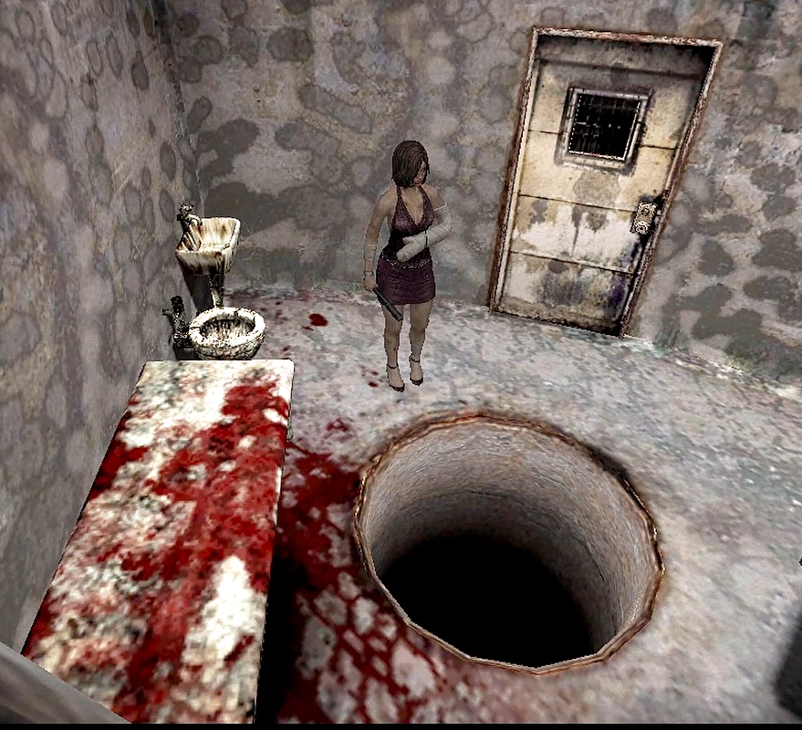
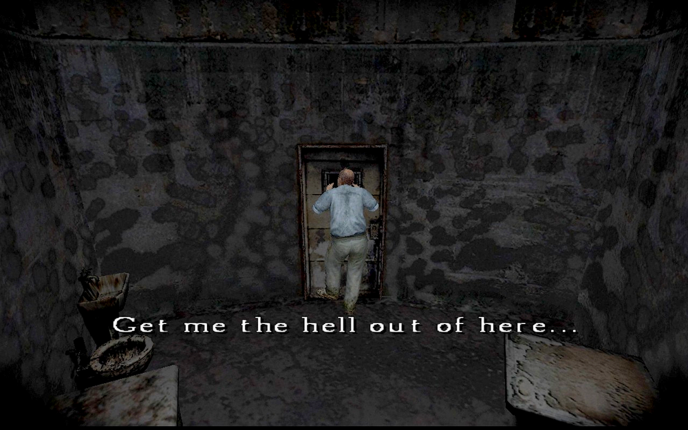
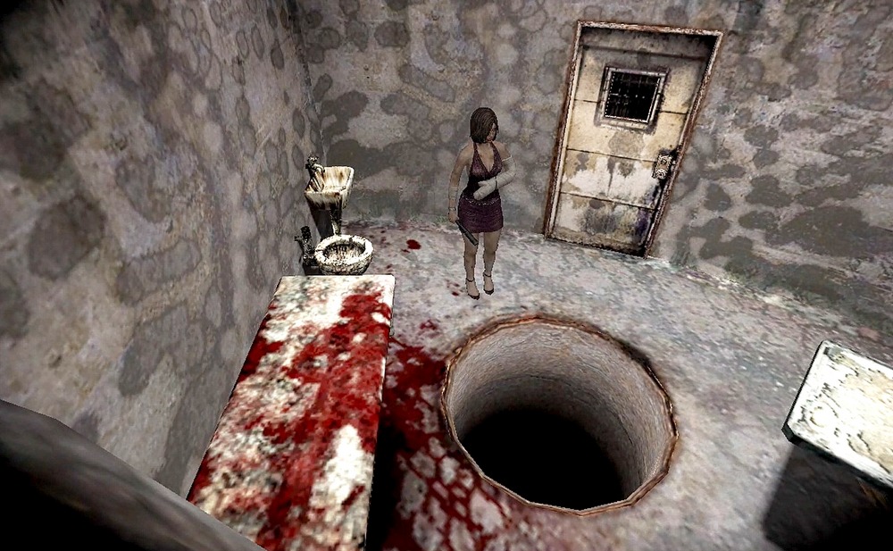
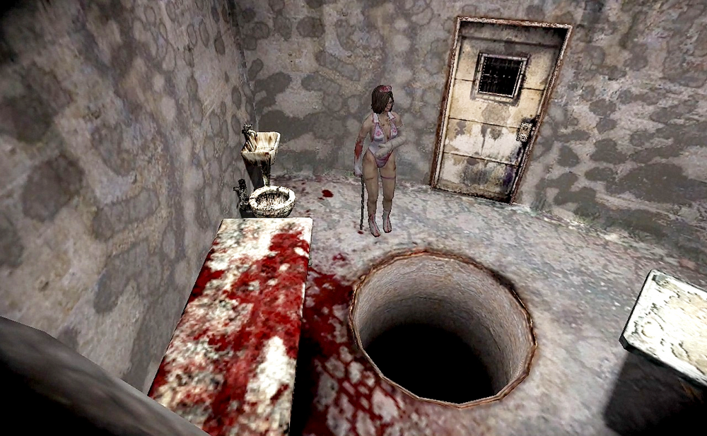
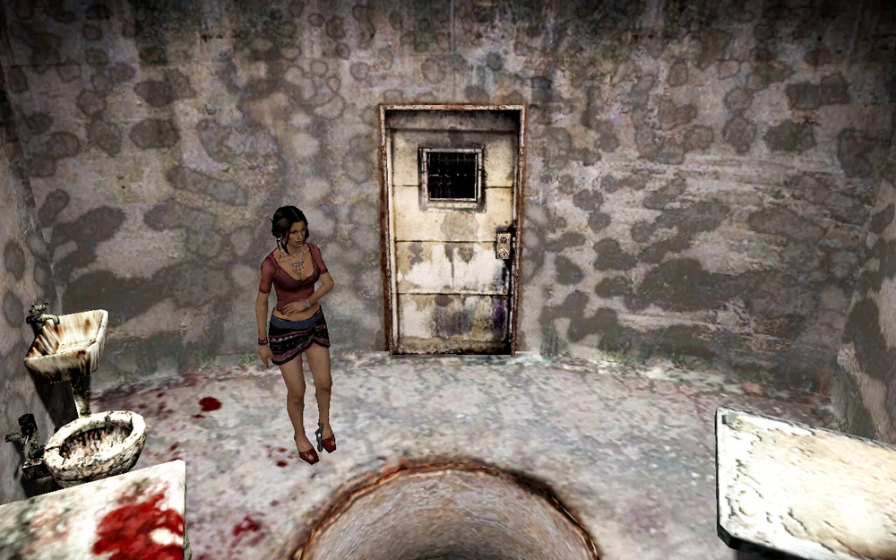
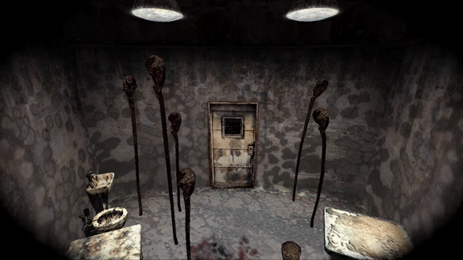
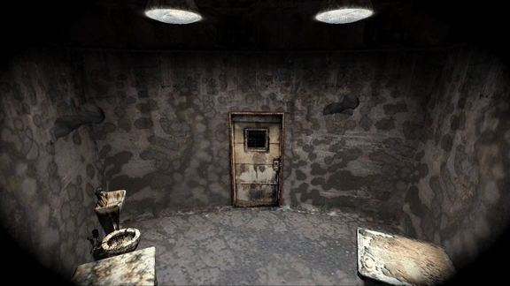
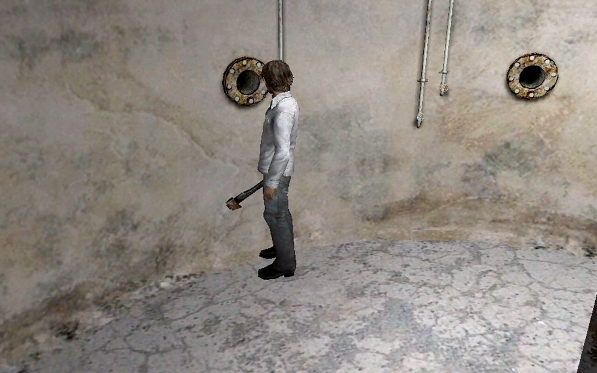

[SH4] Beings Seen Through the Water Prison Peephole

Even the Small Details Are Detailed
![[SH4] Beings Seen Through the Water Prison Peephole](img/da22.png)
This is a mirror of the DeviantArt version linked above, provided as a backup and for easier access.


Through the peephole of the Water Prison's surveillance room, you can see Andrew on the first floor during the first time, and Eileen on the third floor during the second time.

A human-shaped bloodstain on the bed...

Since she's injured, she stays behind instead of going into the hole. And she's actually got the costume and weapon you picked.

By the way, as an experiment, I changed the files from Eileen to Cynthia, and it shows up there as well. *I use it at my own risk.


Personally, I'm a big fan of the mushrooms dancing enthusiastically! And Henry… unresponsive as ever.

This game is pretty detailed, huh? It's amazing!